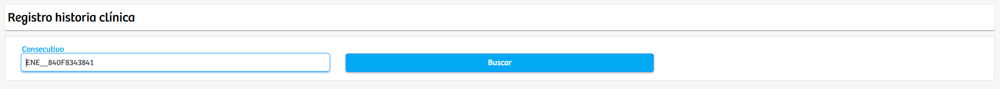
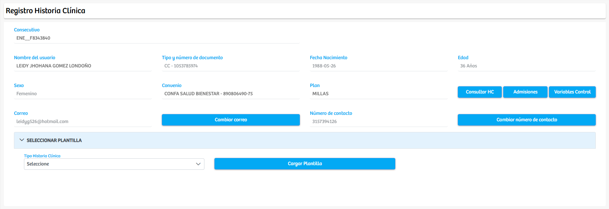
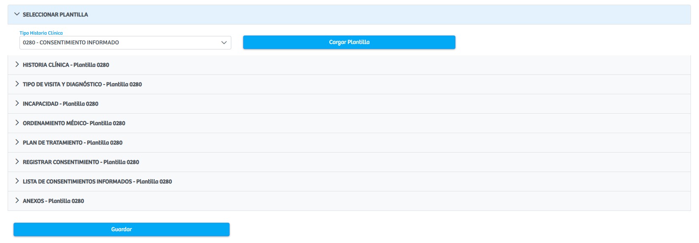

Modulos Sas-Web
Funcionalidades
Historia Clinica por Consecutivo
El módulo Historia Clínica – Por Consecutivo permite consultar, cargar y registrar información clínica asociada a un paciente a partir del número de consecutivo generado durante su atención. Al ingresar a la vista inicial, el sistema presenta un campo de texto en el que el usuario debe introducir el consecutivo correspondiente y luego seleccionar la opción Buscar. Una vez validado el consecutivo, la plataforma despliega automáticamente los datos básicos del paciente, incluyendo nombre, tipo y número de documento, sexo, correo electrónico, convenio, plan, fecha de nacimiento, edad y número de contacto, además de accesos rápidos para consultar su historia clínica previa, revisar admisiones relacionadas o visualizar variables de control.
Tras cargar la información del paciente, el sistema habilita la sección Seleccionar Plantilla, desde la cual el usuario puede escoger el tipo de historia clínica que requiere diligenciar. Al seleccionar el tipo y oprimir el botón Cargar Plantilla, el módulo genera de manera dinámica los diferentes componentes clínicos asociados a esa plantilla, organizados en secciones desplegables tales como: Historia Clínica, Tipo de Visita y Diagnóstico, Incapacidad, Ordenamiento Médico, Plan de Tratamiento, Registro de Consentimiento, Listado de Consentimientos Informados y Anexos, entre otros.
Cada sección contiene los campos requeridos para el registro adecuado de la atención, permitiendo al profesional ingresar la información pertinente de forma estructurada. Una vez completado el diligenciamiento, el usuario puede almacenar la información registrada mediante el botón Guardar, quedando la historia clínica actualizada y disponible para futuras consultas dentro del sistema.
Este módulo centraliza la consulta y el registro de información clínica a partir del consecutivo del paciente, optimizando el flujo de atención, garantizando la trazabilidad y facilitando la continuidad asistencial.